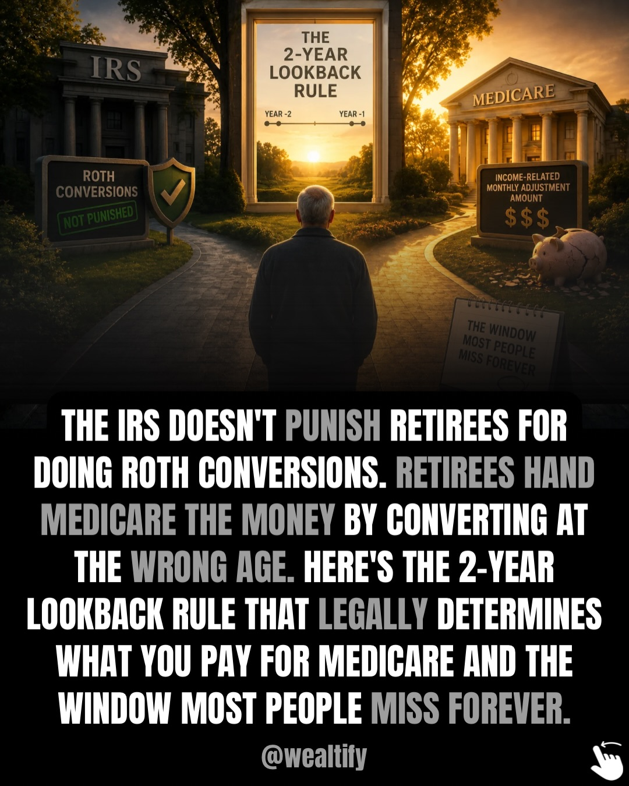
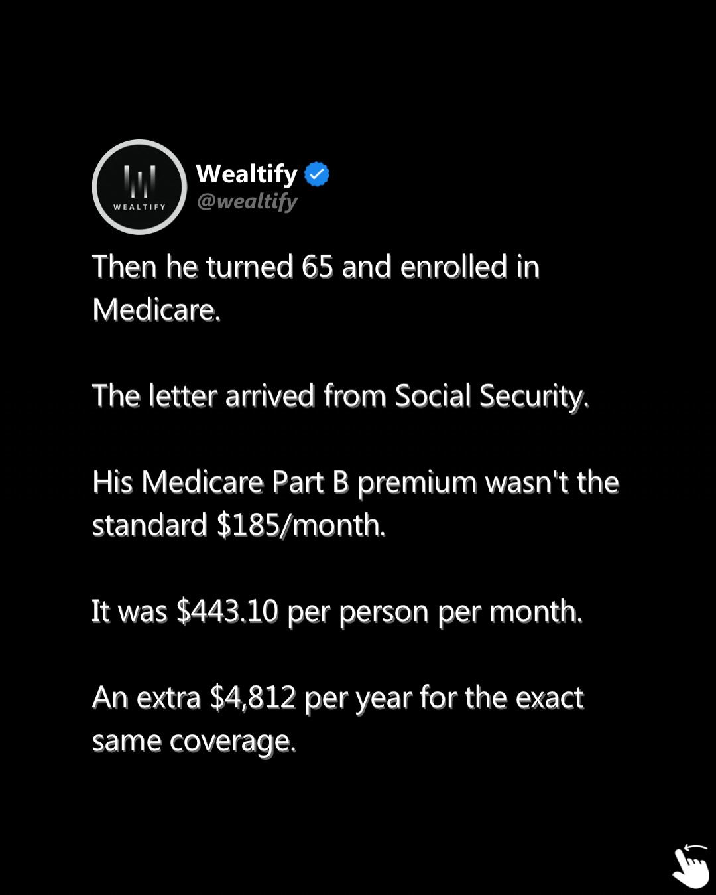
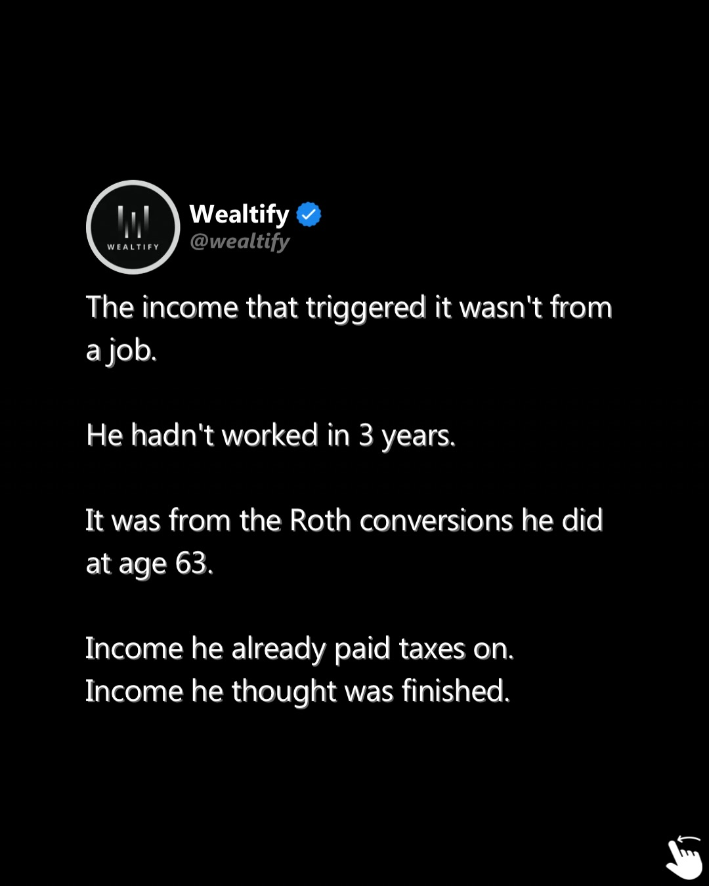
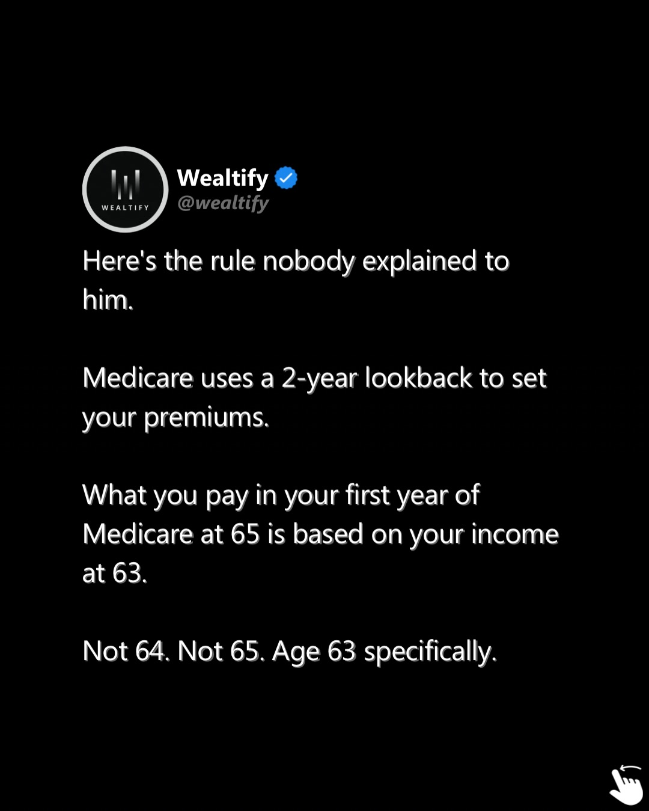
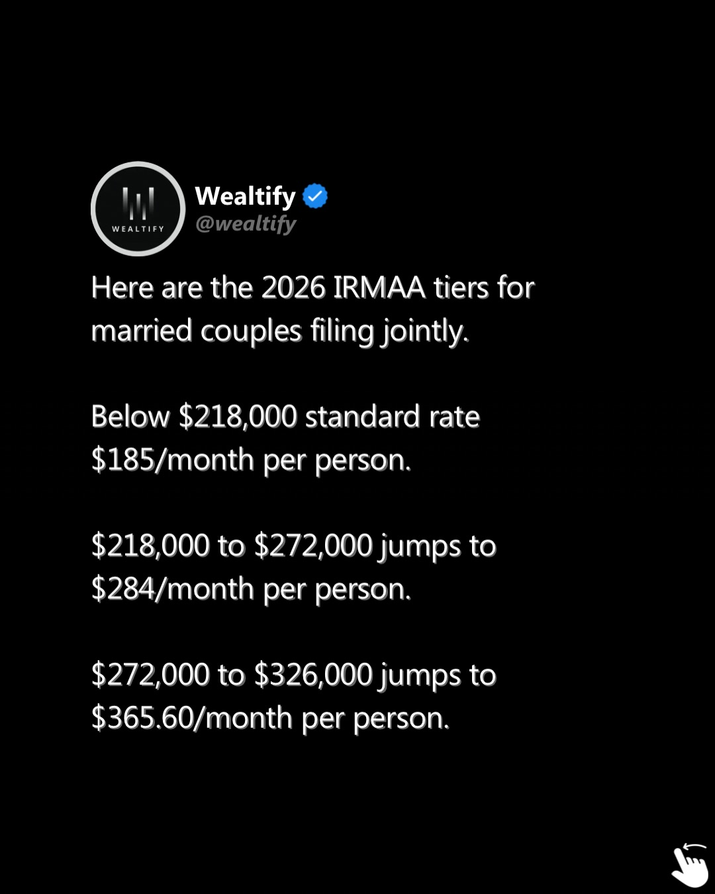
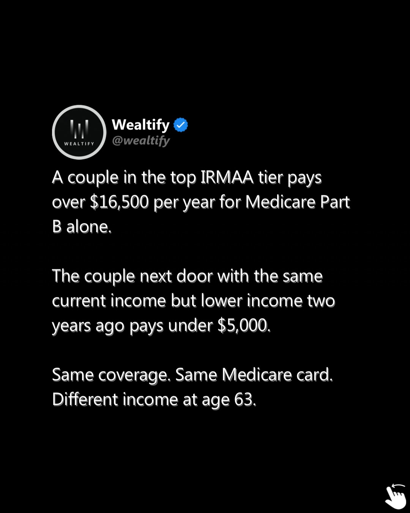
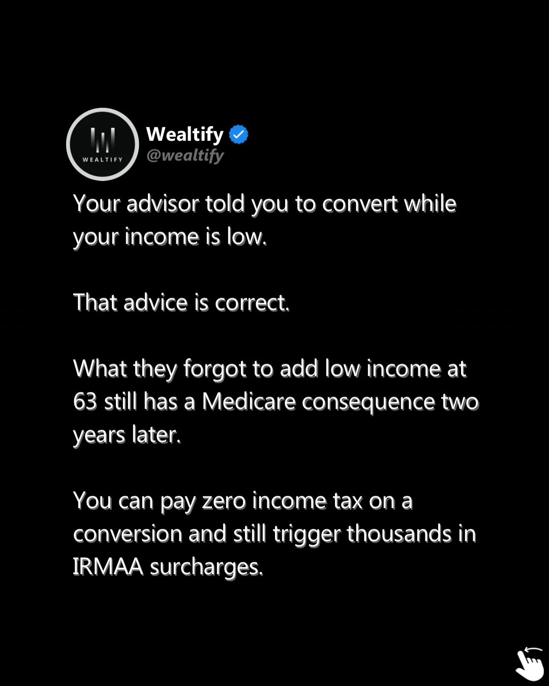

Instagram Post

The IRS doesn’t punish retirees for doing Roth...
carousel (10 slides) (enriched by ClaudeClaw)
Summary
IRS ROTH CONVERSIONS NOT PUNISHED THE 2-YEAR LOOKBACK RUL... | Wealtify Wealtify @wealtify Richard retired at 62 with $6... | Wealtify @wealtify Then he turned 65 and enrolled in Medi... | Wealtify @wealtify The income that triggered it wasn't fr... | WEALTIFY Wealtify @wealtify Here's the rule nobody explai... | WEALTIFY Wealthify @wealthify This surcharge is called IRMAA | WEALTIFY Wealtify @...
Caption
The IRS doesn’t punish retirees for doing Roth conversions. Retirees hand Medicare the money by converting at the wrong age. A 2-year lookback rule means every income decision you make at 63 directly sets your Medicare premium when you enroll at 65. One dollar over the IRMAA threshold and your annual premium jumps immediately — costing couples thousands more per year for the exact same coverage. Most advisors explain the Roth strategy. Almost none explain the Medicare consequence of doing it at the wrong age.
The Unspoken Retirement Rules covers the 2-year lookback, IRMAA tiers, the Widow’s Penalty, and the exact sequencing that determines how much of your retirement savings you actually keep. Comment RULES and we’ll send you the link.
1
IRS ROTH CONVERSIONS NOT PUNISHED THE 2-YEAR LOOKBACK RULE YEAR -2 YEAR -1 MEDICARE INCOME-RELATED MONTHLY ADJUSTMENT AMOUNT $$$ THE WINDOW MOST PEOPLE MISS FOREVER. THE IRS DOESN'T PUNISH RETIREES FOR DOING ROTH CONVERSIONS. RETIREES HAND MEDICARE THE MONEY BY CONVERTING AT THE WRONG AGE. HERE'S THE 2-YEAR LOOKBACK RULE THAT LEGALLY DETERMINES WHAT YOU PAY FOR MEDICARE AND THE WINDOW MOST PEOPLE MISS FOREVER. @wealtify
A person stands at a fork in a path, looking towards a sunset, with buildings labeled "IRS" and "MEDICARE" on either side, and signs explaining financial rules related to Roth conversions and Medicare.
2
Wealtify Wealtify @wealtify Richard retired at 62 with $600,000 in a traditional IRA. He knew about Roth conversions. He did the research. For two years he converted aggressively $180,000 total. His advisor told him he was doing everything right.
A social media post on a black background displays a multi-paragraph story about financial planning, with a profile picture and username for "Wealtify" at the top, and navigation arrows and pagination dots at the bottom.
3
Wealtify @wealtify Then he turned 65 and enrolled in Medicare. The letter arrived from Social Security. His Medicare Part B premium wasn't the standard $185/month. It was $443.10 per person per month. An extra $4,812 per year for the exact same coverage.
A social media post from "Wealtify" on a black background discusses a person's Medicare Part B premium being significantly higher than the standard rate.
4
Wealtify @wealtify The income that triggered it wasn't from a job. He hadn't worked in 3 years. It was from the Roth conversions he did at age 63. Income he already paid taxes on. Income he thought was finished.
A social media post from "Wealtify" on a black background displays text about income, Roth conversions, and taxes, with navigation arrows and pagination dots suggesting it is part of a multi-page carousel.
5
WEALTIFY Wealtify @wealtify Here's the rule nobody explained to him. Medicare uses a 2-year lookback to set your premiums. What you pay in your first year of Medicare at 65 is based on your income at 63. Not 64. Not 65. Age 63 specifically.
A social media post with white text on a black background explains how Medicare premiums are determined based on income from two years prior, featuring a profile picture and navigation arrows.
6
WEALTIFY Wealthify @wealthify This surcharge is called IRMAA. It is not a gradual increase. It is a cliff. Cross the threshold by one single dollar and your entire annual premium jumps to the next tier immediately. For a married couple that first cliff costs nearly $2,000 more per year.
A social media post from "Wealthify" on a dark background, discussing the financial concept of IRMAA and its impact on annual premiums, with navigation arrows and dots visible.
7
WEALTIFY Wealtify @wealtify Here are the 2026 IRMAA tiers for married couples filing jointly. Below $218,000 standard rate $185/month per person. $218,000 to $272,000 jumps to $284/month per person. $272,000 to $326,000 jumps to $365.60/month per person.
A social media post from "Wealtify" on a dark background displays text outlining 2026 IRMAA tiers for married couples, with income brackets and corresponding monthly rates per person.
8
Wealtify @wealtify A couple in the top IRMAA tier pays over $16,500 per year for Medicare Part B alone. The couple next door with the same current income but lower income two years ago pays under $5,000. Same coverage. Same Medicare card. Different income at age 63.
A social media post from "Wealtify" on a black background, discussing Medicare Part B costs for couples with different income histories.
9
Wealthify Wealthify @wealtify Your advisor told you to convert while your income is low. That advice is correct. What they forgot to add low income at 63 still has a Medicare consequence two years later. You can pay zero income tax on a conversion and still trigger thousands in IRMAA surcharges.
A social media post from "Wealthify" on a dark background discusses financial advice regarding income conversion, Medicare, and IRMAA surcharges.
10
WEALTIFY Wealthify @wealthify These are two completely separate calculations. Income tax and Medicare surcharges do not talk to each other. Most advisors explain one. Almost none explain both together. And the gap between those two explanations is costing retirees thousands every year.
A screenshot of a social media post from "Wealthify" on a black background, displaying text about income tax and Medicare surcharges.
All slides





